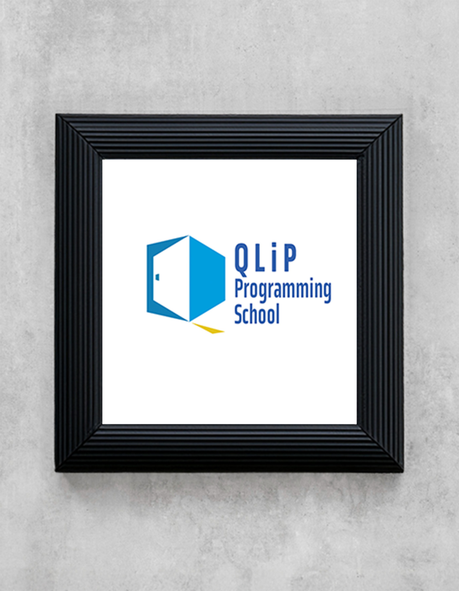
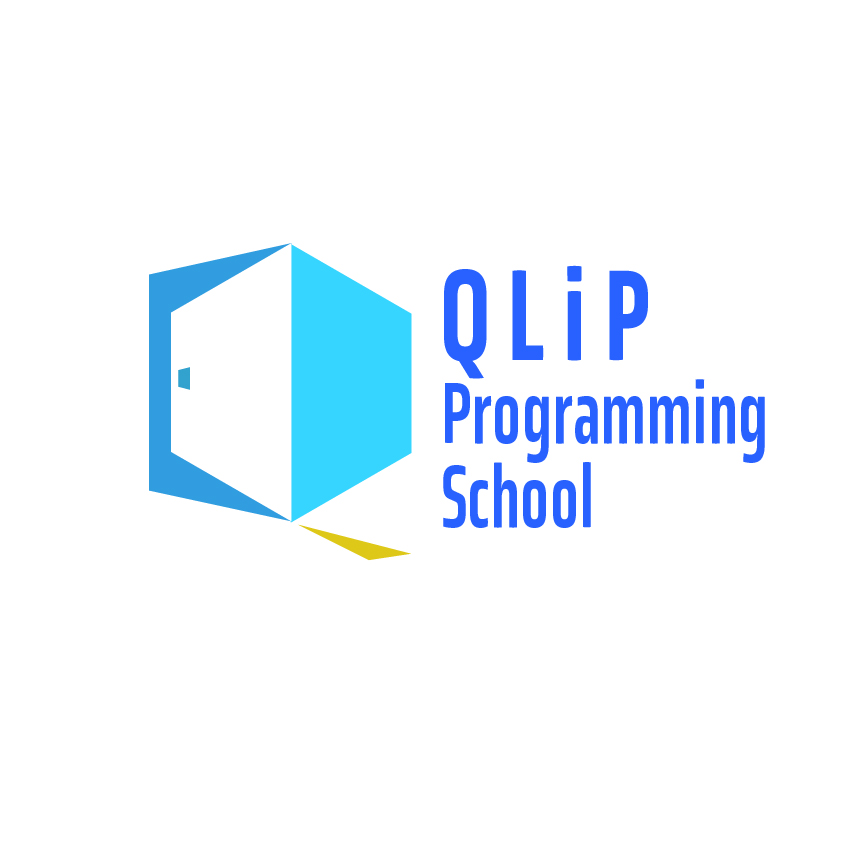

QLiP プログラミングスクール
- 概要
- ロゴ作成演習
- ターゲット
- ITに興味関心がある小学生から社会人まで幅広く６〜５０代の男女。
- デザインに関しての希望
- 特になし。いい感じに！
- デザインにおいての意思入れ
-
カラー選択した理由は上記のロゴと同様です。
シンボルマークは”Q”の形をドアと差し込む光で造形してみました。
本校で学び、高めていくことで「扉を開け未来へ進み始める」「希望と明るい光が差し込む」この２点を表現しています。
フォントには固すぎず、柔らかすぎず、メリハリのあるフォントを選択しています。子供から大人まで幅広い生徒から信頼される、親しまれるように意識しました。 - 制作期間
- １時間程度